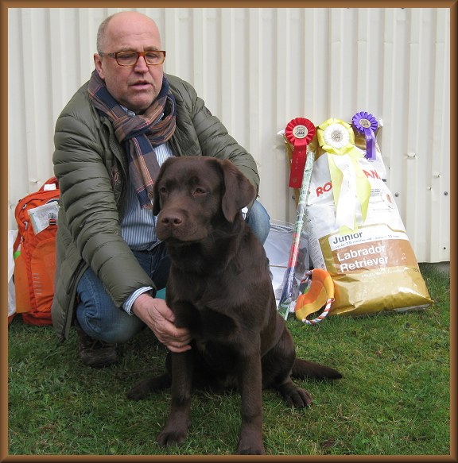

2022
2021
2020
2019
 Peter's Gang Jon Snow "Johnie" - BIS valp
Peter's Gang Jon Snow "Johnie" - BIS valp2018
2017
2016
 BIS valp Labrador ringen & BIS 2:a valpklass i alla raser
BIS valp Labrador ringen & BIS 2:a valpklass i alla raser2015
2014

Tranåsens Chocolate Double Tosca - BIS:3 Valp
2013
Jag har ny mailadress!
annelie.nilsson@bahnhof.se